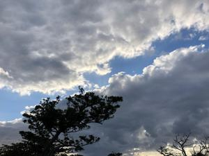
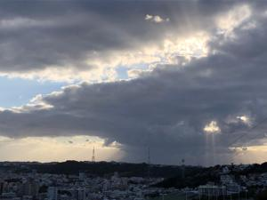
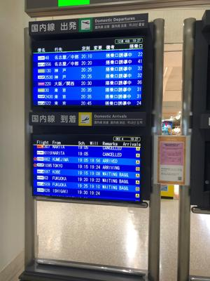

うるがいの話 ある日
最新: 宗教と哲学【うるがいの話 ある日】とは 一日だけのプログです
『うるがいの話』の最新一日だけのプログで、通信料が少なく経済的だ。カニの画像をクリックすると全ての日付が載る『うるがいの話』サイトを表示します
|
|
【うるがいの話】 うるがい(ｳﾙｶﾞｲ urugai)とは、『もずくがに』の名前でとても大きくなります。 |
|---|---|
|
|
【カミマヤーの話】 猫のことを方言でマヤーといいます。カミマヤーとは、神の猫のことです。 |
|
【タナガーの話】 たながー（ﾀﾅｶﾞｰtanagaa）とは手長えびのことで、何種類かあり大きいのは車 エビぐらいになります。 |

|
【ぶながぁの話】 ぶながー(bunagaa)とは、赤い髪の毛、赤い身体、そして身長は１ｍ２０ｃｍ ぐらい、川の蟹を食べているの目撃された。場所は沖縄県国頭郡大宜味村のと ある村僕の隣近所に住んでいる爺さんから、聞いた話です。 |
|
|
【ギーマの話】 ギーマ(giima)とは、山原の里山に咲くスズランに似た、 花を付けます。実は食べられます、 気が付くと口の周りが紫になっています。 |
2021年12月05日 (日）宗教と哲学
16:09
  
１２月の始めの日曜日、例年だとＮＡＨＡマラソンだが今年も延期、コドモは
右足の膝を壊したようで、いまだジョギングが出来ない状態と言っている。昨
日深夜２時過ぎに「ソフィーの世界」（６５５頁）を完読する、良書だ。還暦
を過ぎてマルクス主義の中味を知る。読みながら、宗教と哲学の違いはと思う
本の中には、ブッタの話が２箇所出てくる、下は最初の箇所
ソフィー：「わたしはわたしで変わらないという観念を放棄するってこと？」
アルベルト：「そう、そういう意味」
「ついさっきはぜんぜんちがう意見だったのに。でもね、ヒュームがやった
人間の心の分析と不変の自我の否定を、とっくの昔、二千五百年も前に地球
の裏 側でやった人がいるんだよ」
ソフィー「いったいだれ?」
アルベルト：「ブッダだ。この二人のことばは、気味が悪いほどそっくりだ。
ブッダは、人間の一生とはとぎれのない一つながりの精神的、肉体的な過程
だ、と言った。人は瞬間ごとに変わっていく。赤ちゃんはそのままおとなに
はならない。きょうのわたしはきのうのわたしではない。『これはわたしの
ものだ』と言えるものはなにもない、『これがわたしだ』と言えるものもな
い、とブッダは言った。だから『わたし』もなければ変わらない人格もない
、とね」
読み終えたが、老人になっても難しい。ブッダは宇宙人だろうか・・・・。
１６時０５分 ビットコインの総資産 ￥１６，３０５
ネットで『ビットコインが20％超の下落、暗号資産全般が売られる』とある